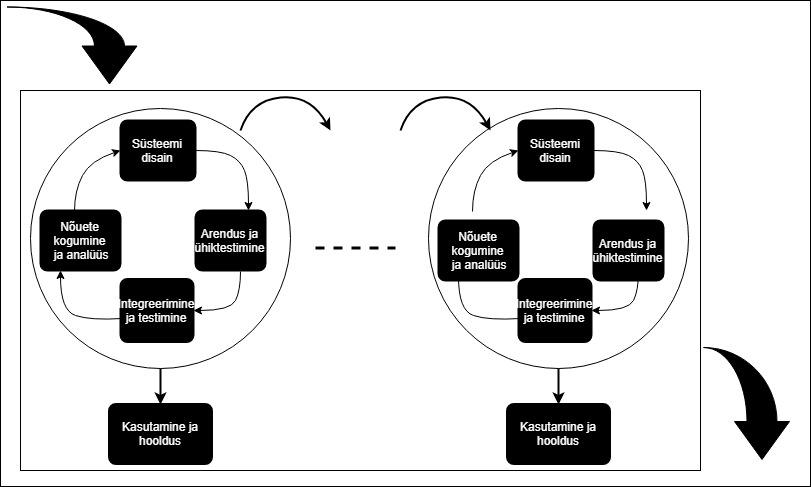

Aastal 1970 räägiti esimest korda tarkvara loomise mudelist nimega waterfall (koskmudel, lineaarne mudel W. Royce 1970[Royce]) :
Plussid
Koskmudeli eelised: selged põhjused-tagajärjed, struktuur, juhtidel on lihtsam jälgida, kas projekt on graafikus, väljamaksed konkreetsete etappide eest.
Mõnikord on see ainuvõimalik lahendus.
Näiteks on koskmudel endiselt väga laialt kasutusel, kui tellijaks on riigiasutus. Samuti on mõistlik selle mudeli kasutamine väga väikeste projektide puhul, kus nõuded on selged, ei muutu ning neid ei tule juurde.
Miinused
Koskmudeli puudusteks on kõrge hind, väga pikk valmimisaeg, palju dokumente: iga tagasiminek on väga kallis, igal etapil tehtud muudatus nõuab järgmiste etappide uuesti läbimist ning dokumenteerimist.
On olnud palju projekte, mis lõpetati ning võeti vastu, kuid pole kunagi kasutusele võetud: aja jooksul muutusid nõuded nii palju, et valmistarkvara polnud enam vajalik (suure süsteemi kõikide vajaduste peensusteni kirja panemisele võib minna
mitu aastat ning paar metsamassiivi dokumentatsiooni koostamisele).
Millal kasutatakse koskmudelit?
kui nõuded on teada ning need on lõplikud ega muutu protsessi käigus;
on teada, mis tehnoloogiaid kasutada;
projekt ei ole liiga pikk;
tellija võib olla huvitatud selle mudeli kasutamisest, kui tal ei ole ressursi tegeleda projektiga pidevalt, vaid ainult tellimise (nõuete kogumise) ning testimise ajal.
Iteratiivne mudel võeti kasutusele 1980. aastal.
Iteratiivse mudeli puhul valmistatakse toote esimene variant, see vaadatakse üle, otsustatakse, kas on valitud õige tee. Algab uus iteratsioon: toodet täiendatakse, see vaadatakse üle, otsustatakse, kas on valitud õige tee. Algab uus iteratsioon…
kuni toode saab valmis.
Iteratiivse mudeli puhul on kogu protsess jagatud mitmeks etapiks (siin ja edasi – iteratsioon), iga iteratsioon kestab 2-6 nädalat. Alguses valmistatakse tarkvara kriitilisem osa, sisuliselt jälgitakse seejuures samu samme, mida koskmudeli puhul.
Järgmise iteratsiooni ajal täiendatakse tarkvara, luues uue funktsionaalsuse või täiendades seda, mis oli varem tehtud. Iteratsioone korrutatakse projekti lõpetamiseni. Kui tarkvara on valmis, võetakse see kasutusele. Protsessi paremaks suunamiseks
võetakse arvesse riskianalüüsi tulemusi. Iteratiivset mudelit võib näidata järgmiselt:
Iteratiivse mudeli raamistikud on näiteks RUP (The Rational Unified Process), EUP (The Enterprise Unified Process).
Millal kasutatakse?
On olemas üldine pilt, mida tahetakse saavutada. Väiksemaid ülesandeid saab täpsustada hiljem.
Projekt on suur. Kui on oht, et projekt venib pikaks, tasub võtta kasutusele iteratiivne mudel, kuna see lubab rakendada paralleelseid iteratsioone: minimeerib riski, et projekti lõpuks muutuvad tarkvara vajadused/nõudmised.
the V model of testing was developed where for every phase, in the Development life cycle there is a corresponding Testing phase
The left side of the model is Software Development Life Cycle – SDLC
The right side of the model is Software Test Life Cycle – STLC
The entire figure looks like a V, hence the name V – model
Apart from the V model, there are iterative development models, where development is carried in phases, with each phase adding a functionality to the software. Each phase comprises its independent set of development and testing activities.
Good examples of Development lifecycles following iterative method are Rapid Application Development, Agile Development
Mis on agiilne mudel?
Agiilne mudeliprotsess SDLC-s hõlbustab arendajaid meeskonnaga suhtlemisel ja annab kliendile käimasoleva projekti kohta täieliku ülevaate ning arendaja teeb vajadusel muudatusi. See paneb arendajad muudatusi tegema vastavalt kliendi interaktsioonile
ja säästab ümbertöötamisel palju aega. Kuna see lähenemine töötab arendamisel ja testimisel käsikäes, töötavad arendajad ja testijad koos
Millal hakati kasutama?
1990. aastate alguses lõid Ken Schwaber ja Jeff Sutherland Scrumi metoodika

Miks just agiilne meetod?
Agiilse mudeli peamised eelised on kiirus, reageerimine olukorra muutustele, inimeste suhtlemine. Tellija on motiveeritud liikuma koos projekti meeskonnaga, ta on ise ka meeskonna liige ja kaasatud kogu protsessi.
Tellija rahulolu – uus tarkvara tarnitakse tihti ja kiiresti.
Inimesed on protsessidest olulisemad: kõik projektis osalevad inimesed on pidevas suhtlemises, mõjutades tulemust.
Projektis osalejad saavad kiiresti tagasisidet, kas see, mis tehti, on vajalik.
Olukorra muutmisel saab toodet kiiresti muuta.
Nõudeid saab muuta isegi väga hilisel projekti etapil.
Dokumenteerimine on minimaalne: puhas isedokumenteeriv kood tähendab, et tekib vähem dokumente (mida keegi ei loe) ning koodi puhtana hoidmine on arendaja ülesandeks, ehk on suurem tõenäosus, et dokumentatsioon (minimaalne arv dokumente +
isedokumenteeriv kood) on aktuaalne.
Millal kasutada?
Agiilne mudel sobib, kui:
meeskond (tooteomanik, arendustiim) on väga tugev;
on soov projektiga kiiresti alustada (ei vaja pikka analüüsi faasi);
on tõenäosus, et mõned nõuded ilmnevad hiljem;
rahastus ei ole probleemiks.
Näited agiilsest arengumudelist
Meeskonnad valivad ühe või kaks meetodit täielikult välja. Üks laialdasemalt kasutatavaid tehnikaid on Scrum ja XP, mis tavaliselt sulanduvad ideaalselt.
Scrum on paindliku alamhulk ja XP on lisaks ka paindlik meetod tarkvara korduvaks tegemiseks.
Spiraalmudelit kirjeldas esimest korda Barry Boehm oma 1986 a. artiklis. Protsessi kulgemist kujutab spiraal. Esimene kordus võib olla näiteks seotud süsteemi teostatavuse uurimisega, teine nõudmiste kirjeldamisega, järgmine kavandamisega jne.
Mitu kordust on enamasti seotud tarkvara realiseerimisega, kus tema ehitamine toimub inkrementaalselt. Kuid kindlasti ei tohiks spiraali korduseid võrdsustada tavapäraste arendusprotsessi faasidega. Iga kordus on jaotatud 3 kuni 6 sektorisse
(erinevad autorid jagavad erinevalt). Iga kordus algab lähema eesmärgi kavandamise ja riskide hindamisega ning lõppeb nö kliendiga - ehk eesmärk peab saama täidetud ja kontrollitud. Sektorite töömahukus ei pruugi olla ühesugune. Boehm'i järgi
on sektoreid neli
Each phase of spiral model in software engineering begins with a design goal and ends with the client reviewing the progress. The spiral model in software engineering was first mentioned by Barry Boehm in his 1986 paper.
The development process in Spiral model in SDLC, starts with a small set of requirement and goes through each development phase for those set of requirements. The software engineering team adds functionality for the additional requirement in every-increasing
spirals until the application is ready for the production phase. The below figure very well explain Spiral Model:
When to use Spiral Model?
A Spiral model in software engineering is used when project is large
When releases are required to be frequent, spiral methodology is used
When creation of a prototype is applicable
When risk and costs evaluation is important
Spiral methodology is useful for medium to high-risk projects
When requirements are unclear and complex, Spiral model in SDLC is useful
When changes may require at any time
When long term project commitment is not feasible due to changes in economic priorities